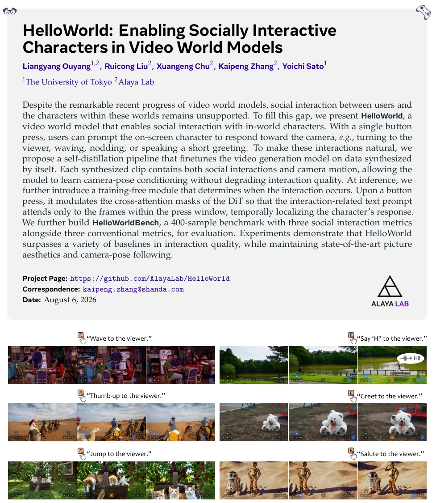
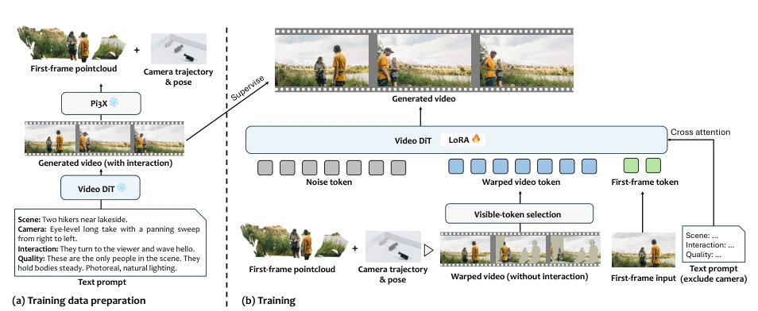
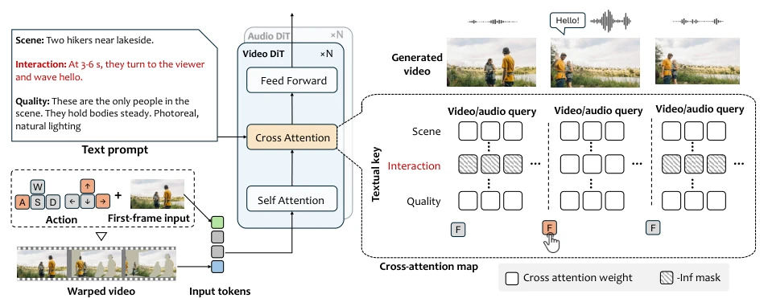
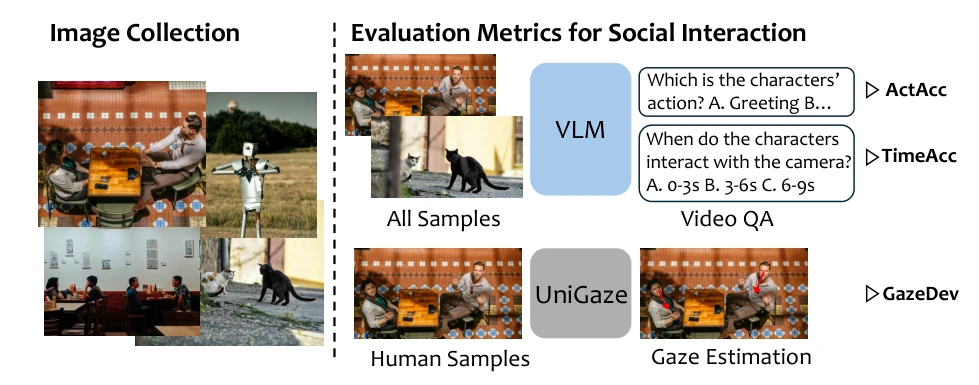
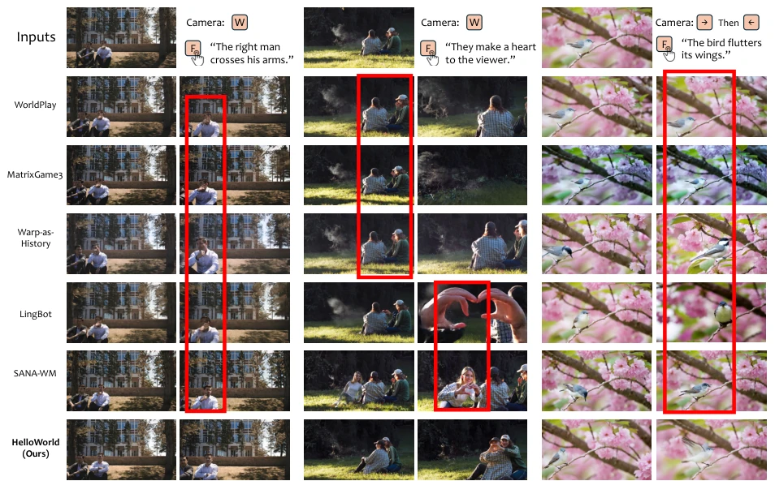
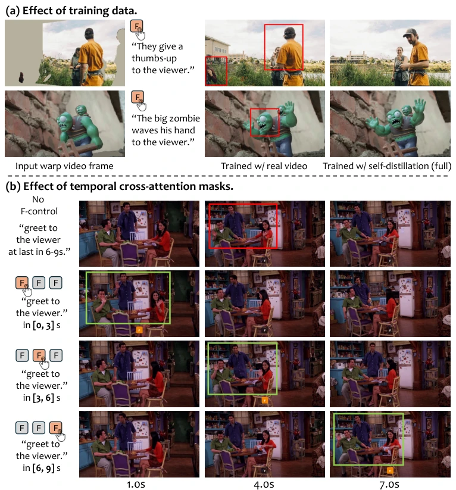

这篇论文给视频世界模型加了个“社交按钮”，算是给只会自嗨的 AI 世界模型注入了点人情味。HelloWorld 的核心在于让角色能对着镜头挥手、点头，而不是像 [52] 里的像素块一样死板。作者搞了个自蒸馏 pipeline，让模型自己生成数据再训练，这招“自己坑自己”挺省数据标注成本，但效果确实立竿见影。推理时的无训练时序掩码也是个巧思，不用改模型结构就能控制互动时机。不过，这玩意儿目前还不能实时交互，还得靠预设轨迹，离真正的“具身”还有点距离。此外，他们提出的 HelloWorldBench 填补了社交互动评估的空白。总的来说，在视频生成领域，它把“看”升级成了“看且被看”，虽然还没法实时握手，但已经比那些只会转镜头的模型强多了，值得在具身交互方向关注。
This paper equips video world models with a "social button", injecting a touch of humanity into AI world models that previously only engaged in self-amusement. The core of HelloWorld lies in enabling characters to wave and nod at the camera, rather than being rigid pixel blocks as in [52]. The authors devised a self-distillation pipeline, allowing the model to generate data for its own training; this "self-sabotage" strategy significantly reduces data annotation costs, yet the results are indeed immediate. The training-free temporal masking during inference is also a clever design, enabling control over interaction timing without altering the model structure. However, this system currently cannot support real-time interaction and still relies on preset trajectories, remaining somewhat distant from true "embodiment". Furthermore, their proposed HelloWorldBench fills the void in social interaction evaluation. In summary, within the field of video generation, it elevates "seeing" to "seeing and being seen". Although it cannot yet shake hands in real-time, it is far superior to models that merely rotate the camera, warranting attention in the direction of embodied interaction.
Existing video world models (such as [52] WorldPlay, [64] MatrixGame 3.0) primarily focus on scene reconstruction and camera control, neglecting social interaction between characters within the world and users. Although [62] ReactiveGWM can control NPC interaction, it is limited to a single game and lacks multimodal social interaction. Most models generate characters that are either static or only perform environmental behaviors, unable to respond to specific instructions (such as waving, eye contact). Existing work often lacks control over gaze direction, resulting in characters unable to truly "gaze" at users. This deficiency hinders the application of video models in scenarios such as virtual companionship and game NPCs. Users desire not only to explore the world but also to establish social connections with entities within the world. Therefore, constructing a world model that supports users actively triggering social interaction while maintaining high-quality video generation is crucial, which is the core pain point this paper attempts to solve.

Figure 1 We propose HelloWorld, a video world model with socially interactive characters. With the interaction button F, users can prompt the on-screen character to interact with the viewer. HelloWorld supports diverse interactions across diverse characters, including humans, animals, and toys, while maintaining high-quality scene and camera-trajectory reconstruction.
方法Method
整体流程分为训练和推理两阶段。训练采用自蒸馏策略：先用基础模型生成含社交互动的视频，利用 Pi3X [61] 恢复首帧点云和相机轨迹，重渲染得到 Warp Video 作为相机条件，通过 LoRA 微调 DiT 模型，确保相机跟随的同时保留互动能力。推理阶段，键盘输入转为相机轨迹生成 Warp Video，同时引入无训练时序交叉注意力掩码。当用户按下交互按钮 F 时，掩码限制交互相关文本 token 仅关注特定帧窗口，实现互动时机的精确控制。这种设计避免了额外训练成本，且通过可见 token 选择模块处理 Warp Video 的遮挡空洞，保证了几何引导的有效性。具体而言，掩码通过修改 Cross-Attention 矩阵，将非交互窗口帧的查询向量与交互文本键值对隔离，确保响应仅在指定时间发生。
The overall process is divided into two stages: training and inference. Training adopts a self-distillation strategy: first, the base model generates videos containing social interactions, using Pi3X [61] to recover the first frame point cloud and camera trajectory, re-rendering to obtain Warp Video as camera conditions, and fine-tuning the DiT model through LoRA to ensure camera following while retaining interaction capabilities. In the inference stage, keyboard input is converted to camera trajectory to generate Warp Video, while introducing training-free temporal cross-attention masking. When the user presses the interaction button F, the mask limits interaction-related text tokens to focus only on specific frame windows, achieving precise control of interaction timing. This design avoids additional training costs and handles occlusion holes in Warp Video through the visible token selection module, ensuring the effectiveness of geometric guidance. Specifically, the mask isolates query vectors of non-interaction window frames from interaction text key-value pairs by modifying the Cross-Attention matrix, ensuring responses occur only at specified times.

Figure 2 Training pipeline of HelloWorld. (a) Training data preparation: The frozen base model generates interaction-rich clips, from which Pi3X recovers the first-frame point cloud and camera poses. (b) Training process: The point cloud is re-rendered along the trajectory into the warp video, whose visible tokens condition the DiT. A lightweight LoRA is finetuned to reconstruct the original clip, with the camera motion removed from the text prompt.

Figure 3 Inference pipeline of HelloWorld. Keyboard actions are translated into a camera trajectory and rendered as the warp video to condition the DiT (left). The temporal cross-attention mask blocks queries outside the F press window (hatched) from attending to the interaction prompt, temporally localizing the character’s response (right).
The authors constructed HelloWorldBench, containing 400 samples generated from 120 diverse images, with evaluation metrics including ActAcc (Action Accuracy), TimeAcc (Timing Accuracy), and GazeDev (Gaze Deviation). Compared to baselines such as WorldPlay and SANA-WM, HelloWorld improved from random levels to 81.7% on TimeAcc, significantly outperforming other models, and performed best on GazeDev. Ablation studies show that training with self-generated data improves interaction quality more than real video data, while temporal masking is crucial for controlling interaction timing. Although inference speed increased by about 20% due to Warp Video, it remains competitive overall, and user studies confirmed its advantage in interaction naturalness, especially when compared to real video LoRA, where the self-distillation strategy yielded better results.

Figure 4 HelloWorldBench overview. Left: we collect 120 high-quality and diverse first-frame images. Right: we use VLMs and a gaze estimator to evaluate social interactions.

Figure 5 Qualitative comparison with baseline methods.

Figure 6 Qualitative ablations of HelloWorld. (a) Without interaction data, the model fails to face the viewer and hallucinates (red boxes). (b) Without the temporal mask, the greeting mistimes (red box). With the mask, it precisely follows the F-press window (green boxes).